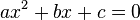
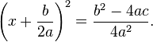

Quadratic Equation Calcualtor

Introduction and Description
"In elementary algebra, a quadratic equation (from the Latin quadratus for "square") is any equation having the form
- 
where x represents an unknown, and a, b, and c represent numbers such that a is not equal to 0. If a = 0, then the equation is linear, not quadratic. The numbers a, b, and c are the coefficients of the equation, and may be distinguished by calling them, respectively, the quadratic coefficient, the linear coefficient and the constant or free term.[1]
Because the quadratic equation involves only one unknown, it is called "univariate". The quadratic equation only contains powers of x that are non-negative integers, and therefore it is a polynomial equation, and in particular it is a second degree polynomial equation since the greatest power is two.
Quadratic equations can be solved by factoring, by completing the square, by using the quadratic formula, or by graphing.
Quadratic formula and its derivation
Completing the square can be used to derive a general formula for solving quadratic equations, called the quadratic formula.[5] The mathematical proof will now be briefly summarized.[6] It can easily be seen, by polynomial expansion, that the following equation is equivalent to the quadratic equation:
- 
Taking the square root of both sides, and isolating x, gives:

Some sources, particularly older ones, use alternative parameterizations of the quadratic equation such as ax2 − 2bx + c = 0 ,[7] where b has a magnitude one half of the more common one, possibly with opposite sign. These result in slightly different forms for the solution, but are otherwise equivalent.
A number of alternative derivations can be found in the literature. These proofs are simpler than the standard completing the square method, represent interesting applications of other frequently used techniques in algebra, or offer insight into other areas of mathematics." [Wikipedia.org]
Building the Sample
I used Visual Studio 2010.
To develop and compile that software I used Visual Studio 2010 Express.
#pragma once
namespace MyQuadraticEquation {
using namespace System;
using namespace System::ComponentModel;
using namespace System::Collections;
using namespace System::Windows::Forms;
using namespace System::Data;
using namespace System::Drawing;
/// <summary>
/// Summary for QuadraticEquation
/// </summary>
public ref class QuadraticEquation : public System::Windows::Forms::Form
{
public:
QuadraticEquation(void)
{
InitializeComponent();
//
//TODO: Add the constructor code here
//
}
protected:
/// <summary>
/// Clean up any resources being used.
/// </summary>
~QuadraticEquation()
{
if (components)
{
delete components;
}
}
protected:
private: System::Windows::Forms::TextBox^ textBox1;
private: System::Windows::Forms::TextBox^ textBox2;
private: System::Windows::Forms::TextBox^ textBox3;
private: System::Windows::Forms::Label^ label3;
private: System::Windows::Forms::Label^ label4;
private: System::Windows::Forms::Label^ label5;
private: System::Windows::Forms::Label^ label6;
private: System::Windows::Forms::Button^ button1;
private: System::Windows::Forms::Label^ label1;
private: System::Windows::Forms::Label^ label2;
private: System::Windows::Forms::Label^ label7;
private: System::Windows::Forms::Label^ label8;
private: System::Windows::Forms::Label^ label9;
private:
/// <summary>
/// Required designer variable.
/// </summary>
System::ComponentModel::Container ^components;
#pragma region Windows Form Designer generated code
/// <summary>
/// Required method for Designer support - do not modify
/// the contents of this method with the code editor.
/// </summary>
void InitializeComponent(void)
{
this->textBox1 = (gcnew System::Windows::Forms::TextBox());
this->textBox2 = (gcnew System::Windows::Forms::TextBox());
this->textBox3 = (gcnew System::Windows::Forms::TextBox());
this->label3 = (gcnew System::Windows::Forms::Label());
this->label4 = (gcnew System::Windows::Forms::Label());
this->label5 = (gcnew System::Windows::Forms::Label());
this->label6 = (gcnew System::Windows::Forms::Label());
this->button1 = (gcnew System::Windows::Forms::Button());
this->label1 = (gcnew System::Windows::Forms::Label());
this->label2 = (gcnew System::Windows::Forms::Label());
this->label7 = (gcnew System::Windows::Forms::Label());
this->label8 = (gcnew System::Windows::Forms::Label());
this->label9 = (gcnew System::Windows::Forms::Label());
this->SuspendLayout();
//
// textBox1
//
this->textBox1->Location = System::Drawing::Point(35, 39);
this->textBox1->Name = L"textBox1";
this->textBox1->Size = System::Drawing::Size(100, 20);
this->textBox1->TabIndex = 1;
//
// textBox2
//
this->textBox2->Location = System::Drawing::Point(159, 39);
this->textBox2->Name = L"textBox2";
this->textBox2->Size = System::Drawing::Size(100, 20);
this->textBox2->TabIndex = 2;
//
// textBox3
//
this->textBox3->Location = System::Drawing::Point(290, 39);
this->textBox3->Name = L"textBox3";
this->textBox3->Size = System::Drawing::Size(100, 20);
this->textBox3->TabIndex = 3;
//
// label3
//
this->label3->AutoSize = true;
this->label3->Font = (gcnew System::Drawing::Font(L"Microsoft Sans Serif", 14.25F, System::Drawing::FontStyle::Regular, System::Drawing::GraphicsUnit::Point,
static_cast<System::Byte>(0)));
this->label3->Location = System::Drawing::Point(31, 204);
this->label3->Name = L"label3";
this->label3->Size = System::Drawing::Size(50, 24);
this->label3->TabIndex = 5;
this->label3->Text = L"X1 =";
//
// label4
//
this->label4->AutoSize = true;
this->label4->Font = (gcnew System::Drawing::Font(L"Microsoft Sans Serif", 14.25F, System::Drawing::FontStyle::Regular, System::Drawing::GraphicsUnit::Point,
static_cast<System::Byte>(0)));
this->label4->Location = System::Drawing::Point(339, 204);
this->label4->Name = L"label4";
this->label4->Size = System::Drawing::Size(50, 24);
this->label4->TabIndex = 6;
this->label4->Text = L"X2 =";
//
// label5
//
this->label5->AutoSize = true;
this->label5->Font = (gcnew System::Drawing::Font(L"Microsoft Sans Serif", 14.25F, System::Drawing::FontStyle::Regular, System::Drawing::GraphicsUnit::Point,
static_cast<System::Byte>(0)));
this->label5->Location = System::Drawing::Point(87, 204);
this->label5->Name = L"label5";
this->label5->Size = System::Drawing::Size(0, 24);
this->label5->TabIndex = 7;
//
// label6
//
this->label6->AutoSize = true;
this->label6->Font = (gcnew System::Drawing::Font(L"Microsoft Sans Serif", 14.25F, System::Drawing::FontStyle::Regular, System::Drawing::GraphicsUnit::Point,
static_cast<System::Byte>(0)));
this->label6->Location = System::Drawing::Point(389, 204);
this->label6->Name = L"label6";
this->label6->Size = System::Drawing::Size(0, 24);
this->label6->TabIndex = 8;
//
// button1
//
this->button1->Location = System::Drawing::Point(504, 31);
this->button1->Name = L"button1";
this->button1->Size = System::Drawing::Size(75, 23);
this->button1->TabIndex = 9;
this->button1->Text = L"Calculate";
this->button1->UseVisualStyleBackColor = true;
this->button1->Click += gcnew System::EventHandler(this, &QuadraticEquation::button1_Click);
//
// label1
//
this->label1->AutoSize = true;
this->label1->Font = (gcnew System::Drawing::Font(L"Microsoft Sans Serif", 14.25F, System::Drawing::FontStyle::Regular, System::Drawing::GraphicsUnit::Point,
static_cast<System::Byte>(0)));
this->label1->Location = System::Drawing::Point(34, 12);
this->label1->Name = L"label1";
this->label1->Size = System::Drawing::Size(115, 24);
this->label1->TabIndex = 10;
this->label1->Text = L"Coefficient A";
//
// label2
//
this->label2->AutoSize = true;
this->label2->Font = (gcnew System::Drawing::Font(L"Microsoft Sans Serif", 14.25F, System::Drawing::FontStyle::Regular, System::Drawing::GraphicsUnit::Point,
static_cast<System::Byte>(0)));
this->label2->Location = System::Drawing::Point(286, 12);
this->label2->Name = L"label2";
this->label2->Size = System::Drawing::Size(115, 24);
this->label2->TabIndex = 11;
this->label2->Text = L"Coefficient C";
//
// label7
//
this->label7->AutoSize = true;
this->label7->Font = (gcnew System::Drawing::Font(L"Microsoft Sans Serif", 14.25F, System::Drawing::FontStyle::Regular, System::Drawing::GraphicsUnit::Point,
static_cast<System::Byte>(0)));
this->label7->Location = System::Drawing::Point(155, 12);
this->label7->Name = L"label7";
this->label7->Size = System::Drawing::Size(114, 24);
this->label7->TabIndex = 12;
this->label7->Text = L"Coefficient B";
//
// label8
//
this->label8->AutoSize = true;
this->label8->Font = (gcnew System::Drawing::Font(L"Microsoft Sans Serif", 14.25F, System::Drawing::FontStyle::Regular, System::Drawing::GraphicsUnit::Point,
static_cast<System::Byte>(0)));
this->label8->Location = System::Drawing::Point(30, 93);
this->label8->Name = L"label8";
this->label8->Size = System::Drawing::Size(146, 24);
this->label8->TabIndex = 13;
this->label8->Text = L"Discriminant D =";
//
// label9
//
this->label9->AutoSize = true;
this->label9->Font = (gcnew System::Drawing::Font(L"Microsoft Sans Serif", 14.25F, System::Drawing::FontStyle::Regular, System::Drawing::GraphicsUnit::Point,
static_cast<System::Byte>(0)));
this->label9->Location = System::Drawing::Point(182, 93);
this->label9->Name = L"label9";
this->label9->Size = System::Drawing::Size(0, 24);
this->label9->TabIndex = 14;
//
// QuadraticEquation
//
this->AutoScaleDimensions = System::Drawing::SizeF(6, 13);
this->AutoScaleMode = System::Windows::Forms::AutoScaleMode::Font;
this->ClientSize = System::Drawing::Size(620, 305);
this->Controls->Add(this->label9);
this->Controls->Add(this->label8);
this->Controls->Add(this->label7);
this->Controls->Add(this->label2);
this->Controls->Add(this->label1);
this->Controls->Add(this->button1);
this->Controls->Add(this->label6);
this->Controls->Add(this->label5);
this->Controls->Add(this->label4);
this->Controls->Add(this->label3);
this->Controls->Add(this->textBox3);
this->Controls->Add(this->textBox2);
this->Controls->Add(this->textBox1);
this->Name = L"QuadraticEquation";
this->Text = L"Quadratic Equation Calculator by Yegor Isakov LTD";
this->ResumeLayout(false);
this->PerformLayout();
}
#pragma endregion
private: System::Void button1_Click(System::Object^ sender, System::EventArgs^ e) {
double a,b,c,D, x1,x2;
label5->Text ="";
label6->Text ="";
label9->Text ="";
a = System::Convert::ToDouble(textBox1->Text);
b = System::Convert::ToDouble(textBox2->Text);
c = System::Convert::ToDouble(textBox3->Text);
if (a==0) {x1=x2=-c/b;
label5->Text =System::Convert::ToString(x1);
label6->Text =System::Convert::ToString(x2);
goto next;
}
D=b*b-4*a*c;
label9->Text =System::Convert::ToString(D);
if(D>=0 || a!=0 && b!=0 && c!=0)
{x1=(-b+sqrt(D))/2/a;
x2=(-b-sqrt(D))/2/a;
label5->Text =System::Convert::ToString(x1);
label6->Text =System::Convert::ToString(x2);
}
else MessageBox::Show("equation has no solution");
next:;
}
};
}
#pragma once namespace MyQuadraticEquation { using namespace System; using namespace System::ComponentModel; using namespace System::Collections; using namespace System::Windows::Forms; using namespace System::Data; using namespace System::Drawing; /// <summary> /// Summary for QuadraticEquation /// </summary> public ref class QuadraticEquation : public System::Windows::Forms::Form { public: QuadraticEquation(void) { InitializeComponent(); // //TODO: Add the constructor code here // } protected: /// <summary> /// Clean up any resources being used. /// </summary> ~QuadraticEquation() { if (components) { delete components; } } protected: private: System::Windows::Forms::TextBox^ textBox1; private: System::Windows::Forms::TextBox^ textBox2; private: System::Windows::Forms::TextBox^ textBox3; private: System::Windows::Forms::Label^ label3; private: System::Windows::Forms::Label^ label4; private: System::Windows::Forms::Label^ label5; private: System::Windows::Forms::Label^ label6; private: System::Windows::Forms::Button^ button1; private: System::Windows::Forms::Label^ label1; private: System::Windows::Forms::Label^ label2; private: System::Windows::Forms::Label^ label7; private: System::Windows::Forms::Label^ label8; private: System::Windows::Forms::Label^ label9; private: /// <summary> /// Required designer variable. /// </summary> System::ComponentModel::Container ^components; #pragma region Windows Form Designer generated code /// <summary> /// Required method for Designer support - do not modify /// the contents of this method with the code editor. /// </summary> void InitializeComponent(void) { this->textBox1 = (gcnew System::Windows::Forms::TextBox()); this->textBox2 = (gcnew System::Windows::Forms::TextBox()); this->textBox3 = (gcnew System::Windows::Forms::TextBox()); this->label3 = (gcnew System::Windows::Forms::Label()); this->label4 = (gcnew System::Windows::Forms::Label()); this->label5 = (gcnew System::Windows::Forms::Label()); this->label6 = (gcnew System::Windows::Forms::Label()); this->button1 = (gcnew System::Windows::Forms::Button()); this->label1 = (gcnew System::Windows::Forms::Label()); this->label2 = (gcnew System::Windows::Forms::Label()); this->label7 = (gcnew System::Windows::Forms::Label()); this->label8 = (gcnew System::Windows::Forms::Label()); this->label9 = (gcnew System::Windows::Forms::Label()); this->SuspendLayout(); // // textBox1 // this->textBox1->Location = System::Drawing::Point(35, 39); this->textBox1->Name = L"textBox1"; this->textBox1->Size = System::Drawing::Size(100, 20); this->textBox1->TabIndex = 1; // // textBox2 // this->textBox2->Location = System::Drawing::Point(159, 39); this->textBox2->Name = L"textBox2"; this->textBox2->Size = System::Drawing::Size(100, 20); this->textBox2->TabIndex = 2; // // textBox3 // this->textBox3->Location = System::Drawing::Point(290, 39); this->textBox3->Name = L"textBox3"; this->textBox3->Size = System::Drawing::Size(100, 20); this->textBox3->TabIndex = 3; // // label3 // this->label3->AutoSize = true; this->label3->Font = (gcnew System::Drawing::Font(L"Microsoft Sans Serif", 14.25F, System::Drawing::FontStyle::Regular, System::Drawing::GraphicsUnit::Point, static_cast<System::Byte>(0))); this->label3->Location = System::Drawing::Point(31, 204); this->label3->Name = L"label3"; this->label3->Size = System::Drawing::Size(50, 24); this->label3->TabIndex = 5; this->label3->Text = L"X1 ="; // // label4 // this->label4->AutoSize = true; this->label4->Font = (gcnew System::Drawing::Font(L"Microsoft Sans Serif", 14.25F, System::Drawing::FontStyle::Regular, System::Drawing::GraphicsUnit::Point, static_cast<System::Byte>(0))); this->label4->Location = System::Drawing::Point(339, 204); this->label4->Name = L"label4"; this->label4->Size = System::Drawing::Size(50, 24); this->label4->TabIndex = 6; this->label4->Text = L"X2 ="; // // label5 // this->label5->AutoSize = true; this->label5->Font = (gcnew System::Drawing::Font(L"Microsoft Sans Serif", 14.25F, System::Drawing::FontStyle::Regular, System::Drawing::GraphicsUnit::Point, static_cast<System::Byte>(0))); this->label5->Location = System::Drawing::Point(87, 204); this->label5->Name = L"label5"; this->label5->Size = System::Drawing::Size(0, 24); this->label5->TabIndex = 7; // // label6 // this->label6->AutoSize = true; this->label6->Font = (gcnew System::Drawing::Font(L"Microsoft Sans Serif", 14.25F, System::Drawing::FontStyle::Regular, System::Drawing::GraphicsUnit::Point, static_cast<System::Byte>(0))); this->label6->Location = System::Drawing::Point(389, 204); this->label6->Name = L"label6"; this->label6->Size = System::Drawing::Size(0, 24); this->label6->TabIndex = 8; // // button1 // this->button1->Location = System::Drawing::Point(504, 31); this->button1->Name = L"button1"; this->button1->Size = System::Drawing::Size(75, 23); this->button1->TabIndex = 9; this->button1->Text = L"Calculate"; this->button1->UseVisualStyleBackColor = true; this->button1->Click += gcnew System::EventHandler(this, &QuadraticEquation::button1_Click); // // label1 // this->label1->AutoSize = true; this->label1->Font = (gcnew System::Drawing::Font(L"Microsoft Sans Serif", 14.25F, System::Drawing::FontStyle::Regular, System::Drawing::GraphicsUnit::Point, static_cast<System::Byte>(0))); this->label1->Location = System::Drawing::Point(34, 12); this->label1->Name = L"label1"; this->label1->Size = System::Drawing::Size(115, 24); this->label1->TabIndex = 10; this->label1->Text = L"Coefficient A"; // // label2 // this->label2->AutoSize = true; this->label2->Font = (gcnew System::Drawing::Font(L"Microsoft Sans Serif", 14.25F, System::Drawing::FontStyle::Regular, System::Drawing::GraphicsUnit::Point, static_cast<System::Byte>(0))); this->label2->Location = System::Drawing::Point(286, 12); this->label2->Name = L"label2"; this->label2->Size = System::Drawing::Size(115, 24); this->label2->TabIndex = 11; this->label2->Text = L"Coefficient C"; // // label7 // this->label7->AutoSize = true; this->label7->Font = (gcnew System::Drawing::Font(L"Microsoft Sans Serif", 14.25F, System::Drawing::FontStyle::Regular, System::Drawing::GraphicsUnit::Point, static_cast<System::Byte>(0))); this->label7->Location = System::Drawing::Point(155, 12); this->label7->Name = L"label7"; this->label7->Size = System::Drawing::Size(114, 24); this->label7->TabIndex = 12; this->label7->Text = L"Coefficient B"; // // label8 // this->label8->AutoSize = true; this->label8->Font = (gcnew System::Drawing::Font(L"Microsoft Sans Serif", 14.25F, System::Drawing::FontStyle::Regular, System::Drawing::GraphicsUnit::Point, static_cast<System::Byte>(0))); this->label8->Location = System::Drawing::Point(30, 93); this->label8->Name = L"label8"; this->label8->Size = System::Drawing::Size(146, 24); this->label8->TabIndex = 13; this->label8->Text = L"Discriminant D ="; // // label9 // this->label9->AutoSize = true; this->label9->Font = (gcnew System::Drawing::Font(L"Microsoft Sans Serif", 14.25F, System::Drawing::FontStyle::Regular, System::Drawing::GraphicsUnit::Point, static_cast<System::Byte>(0))); this->label9->Location = System::Drawing::Point(182, 93); this->label9->Name = L"label9"; this->label9->Size = System::Drawing::Size(0, 24); this->label9->TabIndex = 14; // // QuadraticEquation // this->AutoScaleDimensions = System::Drawing::SizeF(6, 13); this->AutoScaleMode = System::Windows::Forms::AutoScaleMode::Font; this->ClientSize = System::Drawing::Size(620, 305); this->Controls->Add(this->label9); this->Controls->Add(this->label8); this->Controls->Add(this->label7); this->Controls->Add(this->label2); this->Controls->Add(this->label1); this->Controls->Add(this->button1); this->Controls->Add(this->label6); this->Controls->Add(this->label5); this->Controls->Add(this->label4); this->Controls->Add(this->label3); this->Controls->Add(this->textBox3); this->Controls->Add(this->textBox2); this->Controls->Add(this->textBox1); this->Name = L"QuadraticEquation"; this->Text = L"Quadratic Equation Calculator by Yegor Isakov LTD"; this->ResumeLayout(false); this->PerformLayout(); } #pragma endregion private: System::Void button1_Click(System::Object^ sender, System::EventArgs^ e) { double a,b,c,D, x1,x2; label5->Text =""; label6->Text =""; label9->Text =""; a = System::Convert::ToDouble(textBox1->Text); b = System::Convert::ToDouble(textBox2->Text); c = System::Convert::ToDouble(textBox3->Text); if (a==0) {x1=x2=-c/b; label5->Text =System::Convert::ToString(x1); label6->Text =System::Convert::ToString(x2); goto next; } D=b*b-4*a*c; label9->Text =System::Convert::ToString(D); if(D>=0 || a!=0 && b!=0 && c!=0) {x1=(-b+sqrt(D))/2/a; x2=(-b-sqrt(D))/2/a; label5->Text =System::Convert::ToString(x1); label6->Text =System::Convert::ToString(x2); } else MessageBox::Show("equation has no solution"); next:; } }; }
- source code file name #1 - summary for this source code file.
- source code file name #2 - summary for this source code file.
More Information
For more information on X, see ...?